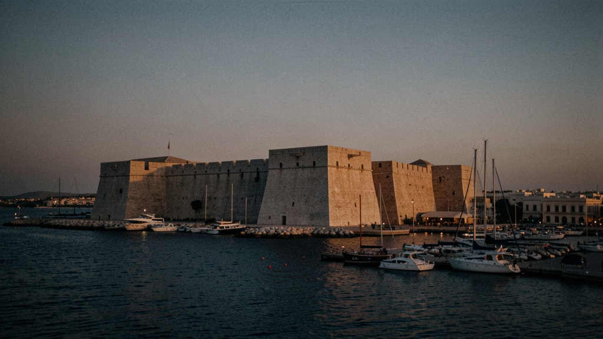
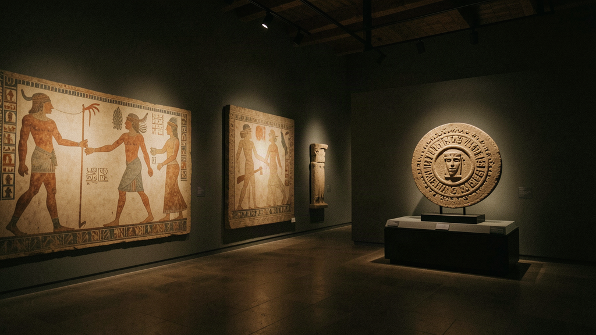
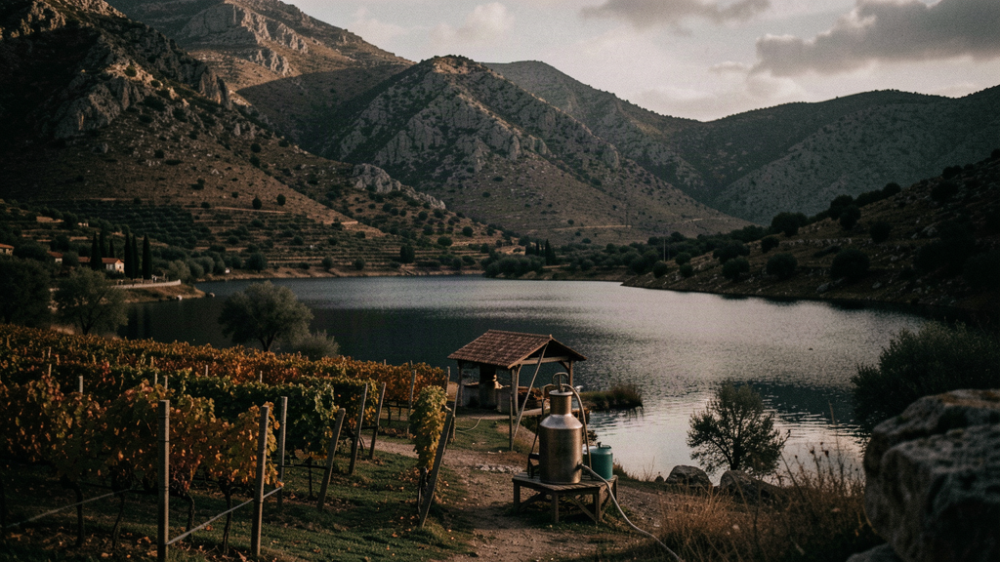
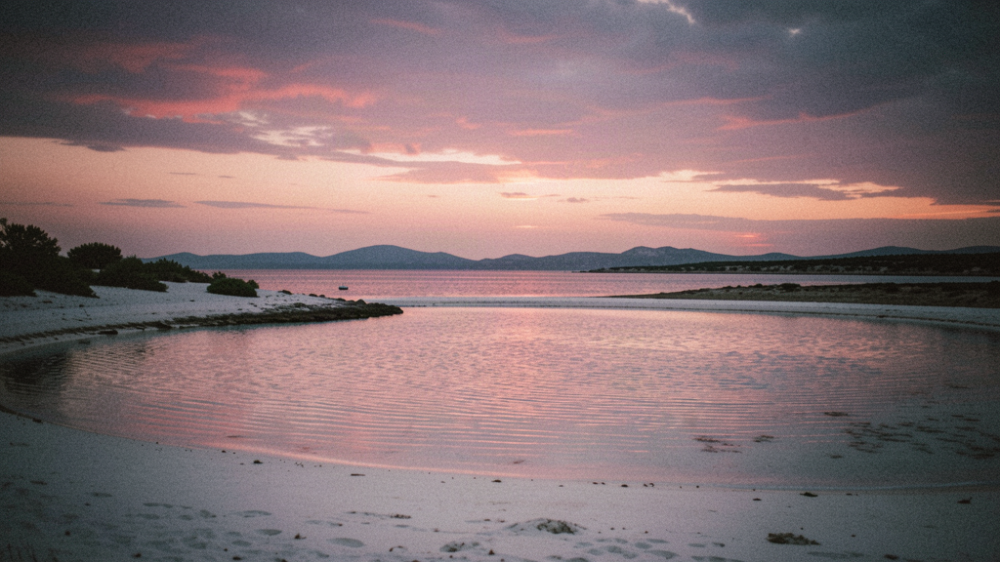
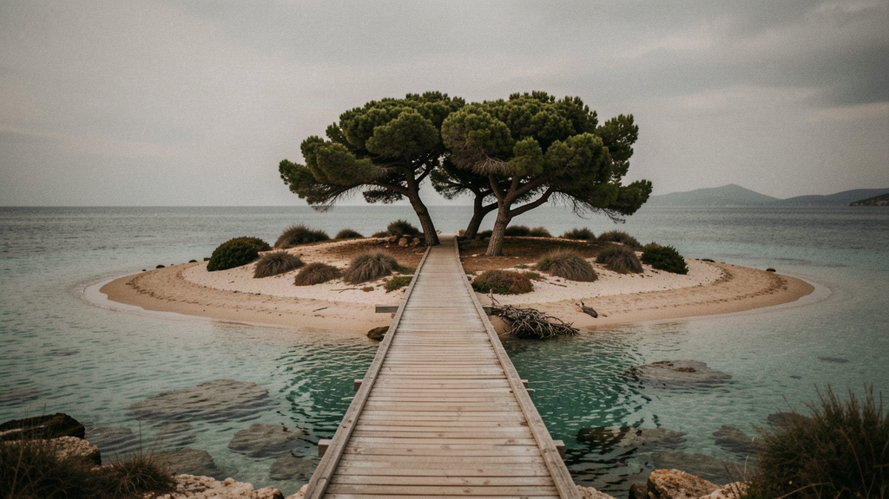
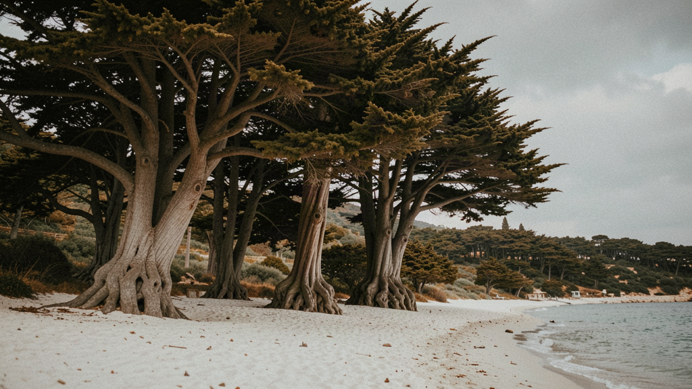
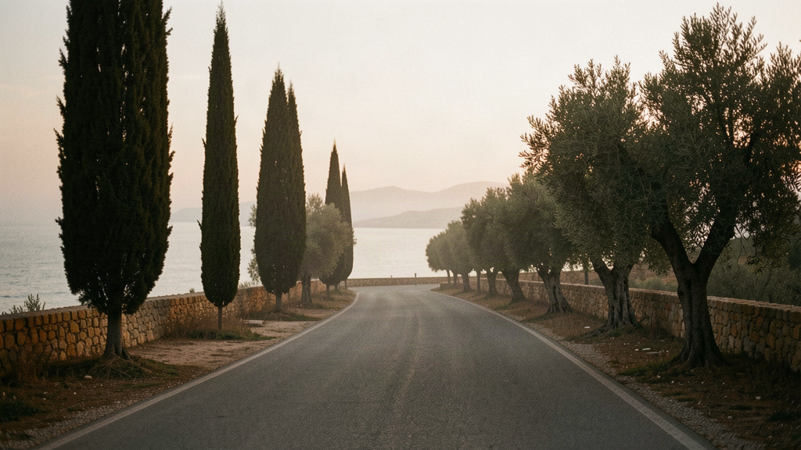

Greece · Early autumn
Seven nights, your own room, a table of 4–8. The warmest sea, the grape harvest beginning, quiet lagoons.
Seven nights. Your own room. A table of 4–8 matched to you. Expected 2026 / 2027.
Price: £1,950–£2,750 per person, seven nights, own room included. Flights separate. A band, not a fixed price — suppliers aren't signed, and the first departures are expected in 2026 or 2027. You're not putting money on a date that doesn't exist.

Fly into Heraklion airport "Nikos Kazantzakis" (HER), 10 minutes from the centre. Eleni meets you; your own room is ready by noon.
Walk the Venetian harbour and Koules fortress (Rocca al Mare), the 16th-century citadel that guarded the port, then the old town lanes and coffee.
First table dinner near the harbour — Cretan cooking, no theatre. Eleni lays out the week and names the one thing she'd change if she could.

The Heraklion Archaeological Museum — the Minoan frescoes, the Snake Goddess figurines, the Phaistos Disc. Eleni gives you the context the labels skip.
15 minutes south to Knossos. The palace, the reconstructions (and which parts are reconstructions), the questions that stay open. Back to Heraklion.
Dinner in the old town — a courtyard restaurant like Loukoulos, there since the 1960s.

Drive 1h south to Zaros, on the southern slopes of Psiloritis, through the Mesara plain. A stop at a family vineyard where the September harvest is underway — grapes for the raki stills that fire up later in the month.
Lunch by Lake Votomos, fed by the springs of Zaros, then a short walk up the Rouvas Gorge trail (shaded, 1–1.5 hours) or just the lakeside. Back to Heraklion.
Free — a quiet night, your own room.

The long transfer west, about 3 hours, down the south-coast road through the Amari valley and Spili, then southwest to the Elafonisi area.
Check into your own room near the coast. If there's light, the beach at Elafonisi — the shallow, pink-tinged lagoon, knee-deep for a hundred metres out.
Table dinner at a taverna near Chrysoskalitissa, the cliff monastery just before the lagoon.

Elafonisi properly — the causeway to the islet, the shallow water, the cedar shade. September means warm sea and space to find your own strip of sand.
The nearby Kedrodasos, a cedar forest behind a quieter beach, 10 minutes east. Or stay at Elafonisi.
Dinner at the stay, or a short drive to Elos, the chestnut village, for a taverna meal.

Option to boat from Paleochora (40 minutes north) to Sougia or Agia Roumeli, or a walk on the coast path. Eleni keeps it optional — the point is the sea is still warm and the buses have gone home.
Free on the Elafonisi or Grammeno beaches.
Final group dinner. Eleni says what she'd do differently, and which of you she'd eat with again — honestly.

Coffee by the water. The drive back: about 2h30 to Chania (CHQ) or about 3h to Heraklion (HER), depending on your flight.
You leave with the group's contacts. If the table worked, you'll know before you fly.
When a table opens for Greece in Early autumn, we'll tell you. One message when there's something real — no newsletter, no hard sell.
Register your interest